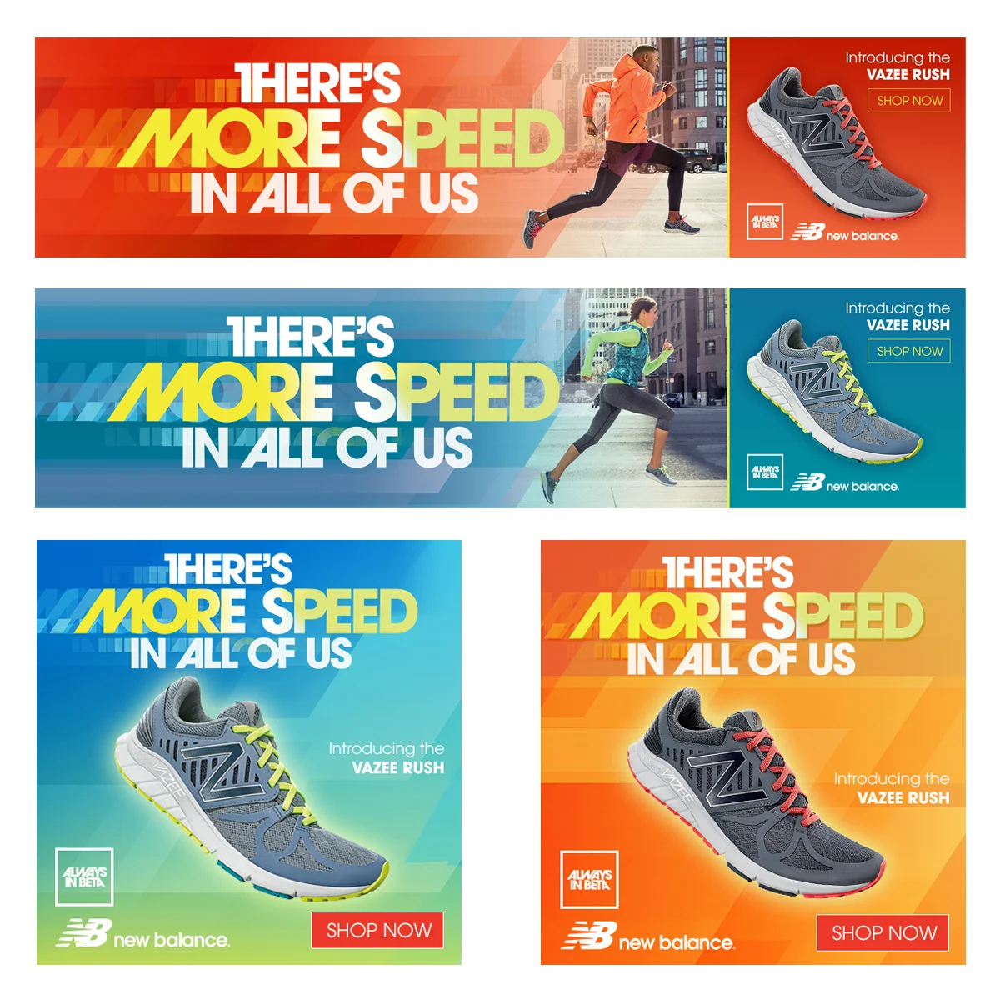
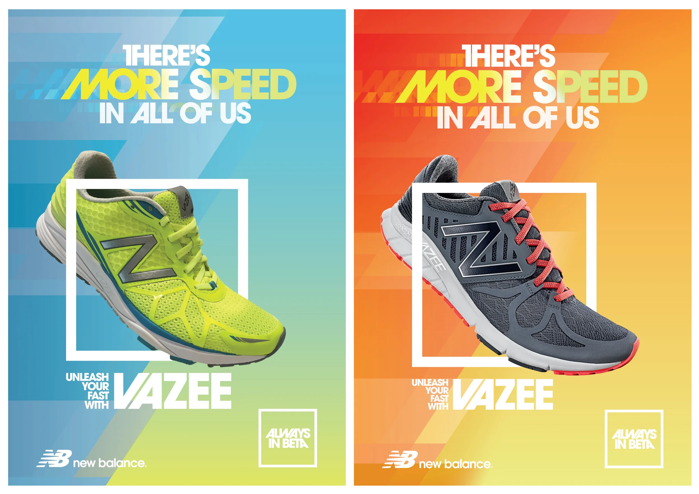
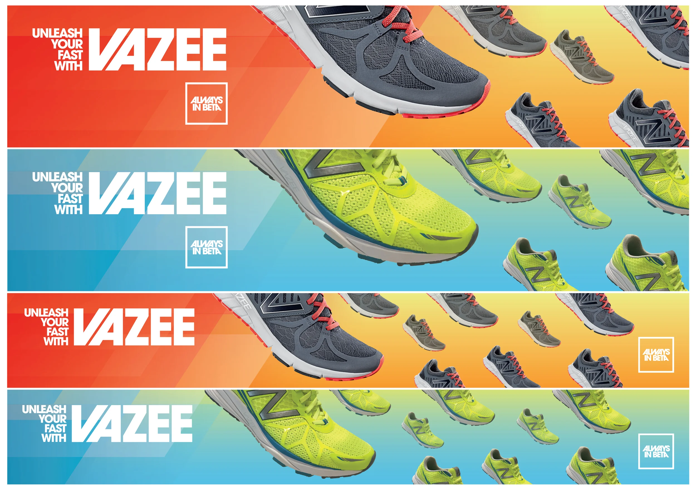
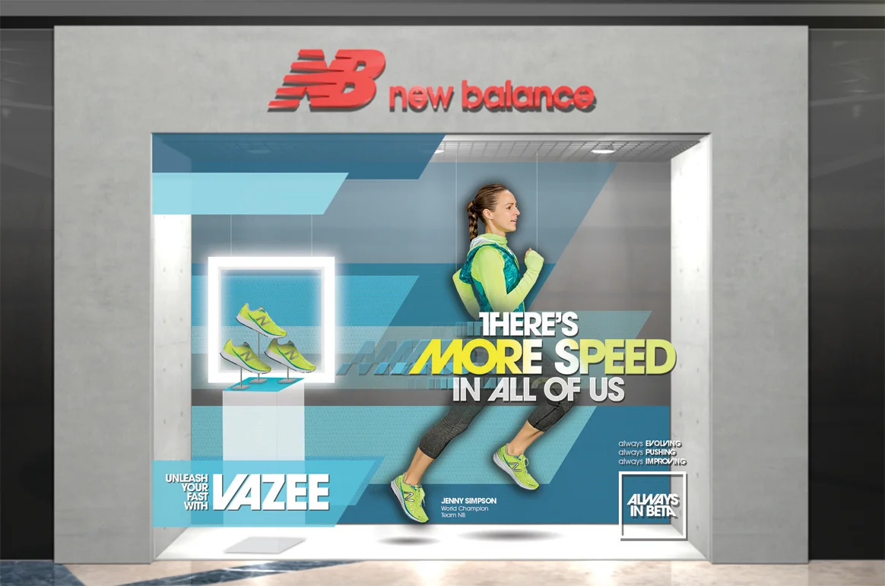
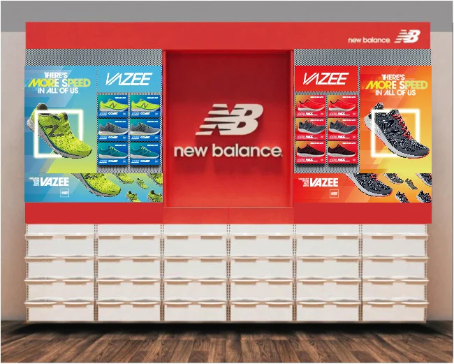
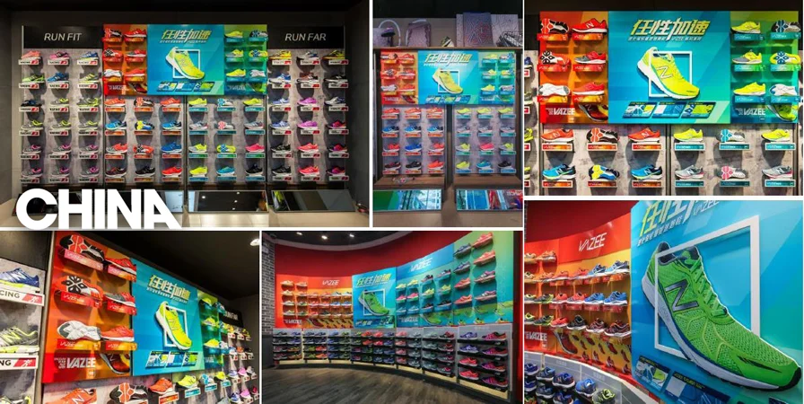
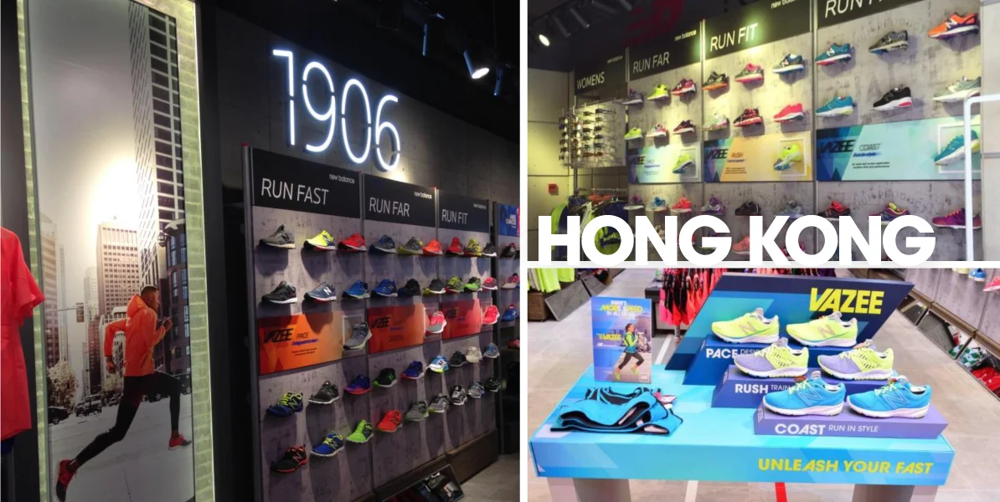
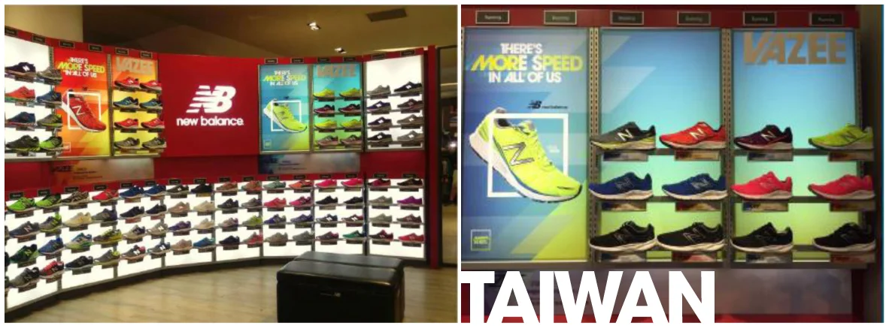

Print, digital, and 3D retail design for the global launch of New Balance's VAZEE performance running line — one creative system, adapted across ad formats, storefronts, and in-store displays in markets from Boston to Hong Kong.

[Ari: replace with the real problem] New Balance needed the VAZEE Rush launch to feel like one unmistakable campaign whether someone encountered it as a small digital banner, a storefront window in a shopping mall, or an entire wall of product in a flagship store — and it needed to work in international markets like China, Hong Kong, and Taiwan without losing that consistency.
[Ari: swap in real research/creative brief insights — brand guidelines, retail constraints, market-specific needs] The line's tagline, "There's more speed in all of us," and its "Always in Beta" brand platform meant the visual system needed built-in energy — diagonal motion lines, bold color-blocked gradients, a "frame" device around the shoe itself — that could scale down to a small square banner or up to a two-story storefront without losing impact.

The core system started with vertical print executions: a diagonal color gradient, bold "more speed" wordmark treatment, and a white frame device isolating the shoe as the hero — establishing a visual language distinct enough to be recognized at a glance, in either colorway.

The vertical key visual had to translate into leaderboard banners, squares, and everything in between — repositioning the hero shot and type without ever breaking the diagonal motion language that tied every size back to the same campaign.

[Ari: confirm/replace — describing the window display concept] At storefront scale, the campaign became an environment rather than an ad — a lit product pedestal and life-size athlete imagery pulled straight from the same key visual, turning a mall window into a piece of the campaign itself.

Inside the store, the same red-and-graphic system wrapped an entire product wall — anchoring dozens of physical shoe fixtures around the same launch creative shoppers had already seen in ads and windows on the way in.

[Ari: add real outcome — sell-through data, market feedback, rollout scale] The system launched in retail locations across multiple countries, adapting the same visual language to each market's specific store layout and fixtures while keeping the campaign instantly recognizable everywhere it appeared.



Placeholder: something like — designing the print key visual first, before any digital or retail adaptation, gave every other format a clear anchor to translate back to.
Placeholder: something like — a campaign system built to flex across wildly different physical formats (a banner vs. a two-story window) needs fewer, bolder signature elements rather than more detail.